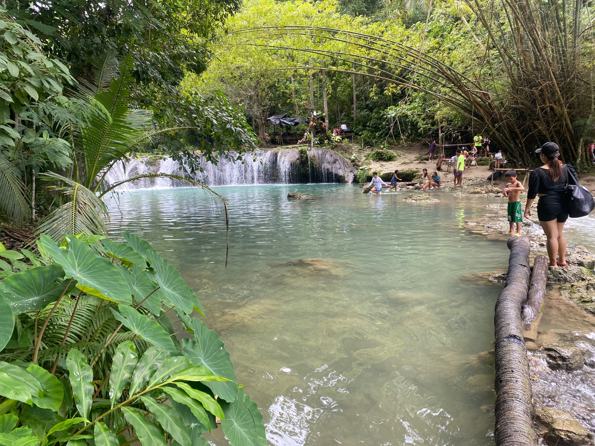
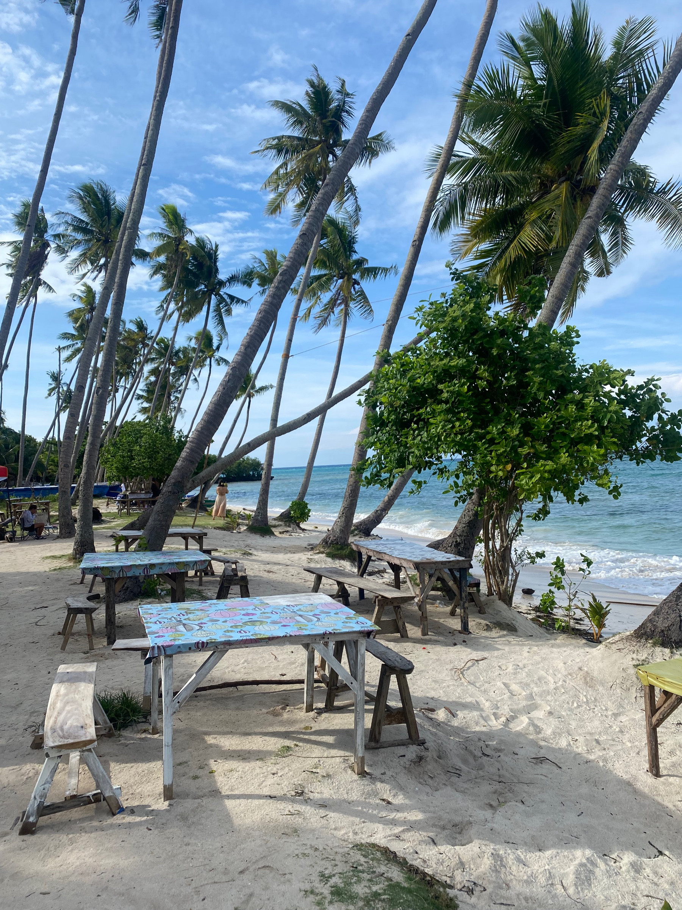
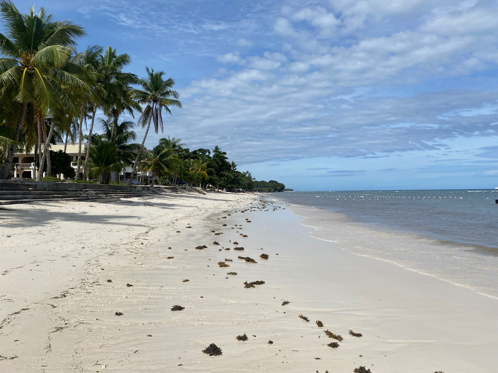
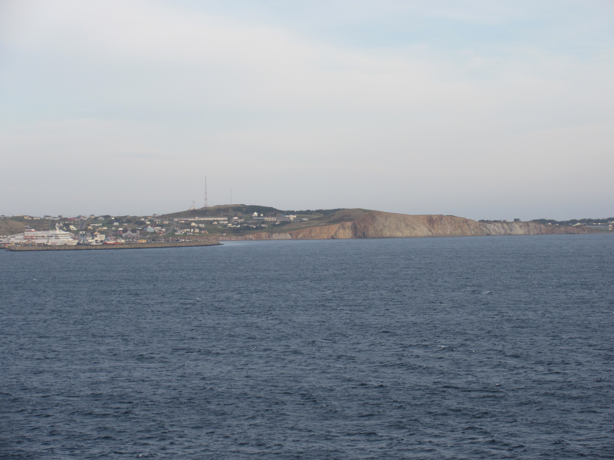
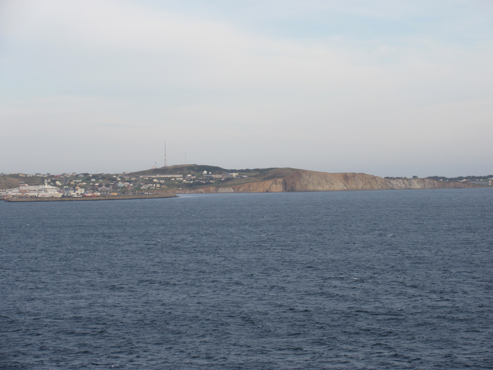

"I Love Philippines!"

How could it be so many years since I last visited the wonderful Philippines. It's a travesty, there is no doubt about it! Now that the long radio silence is coming to an end it's time to prepare for a month in these magnificent islands. The flight from Sydney to Manila is a lazy eight hours, everything is super close and convenient for Aussies heading out to South East Asia. After an overnight stopover I boarded a domestic flight down to Cebu treasonably early in the morning. This was my second visit, and I booked a top rated hostel online for the stay before the trip. To my surprise, the hostel was not in Cebu City but further south, however after arriving it was certainly worth the minor inconvenience. Coincidentally two of the top attractions on the island are further south of Cebu, so it all worked out for the best. The staff at the hostel made me feel so welcome, the establishment is extremely well run and clean... with a bar! I settled in to a travel routine quickly, and an experienced local traveller sat down with me and patiently planned out a proposed itinerary for the month, based on my wishes and his knowledge. So I found myself spending at least half a day online, working backwards from the final domestic flight until I had booked an entire itinerary for the trip. All of the flights had to re-route through Cebu, which is just a minor inconvenience. Of course I also locked in a few ferry trips to complete the picture. So there I was, with a full month to look forward to, and all I had to do was stay healthy, be positive, and try to make every post a winner. The sense of excitement once my itinerary was locked in, although a tad ambitious I have to admit, was palpable.Read more
So with everything lined up, it was time to make the most of my time in Cebu, the historic capital of the Visayas. I commenced my adventures by hailing a local bus on the main road outside the hostel, for the 2.5 hour commute south to Moalboal. The little tourist town is very cool, and famous for the sardine run just offshore. Adventurers head out from the shore with a snorkelling guide, and before I knew it I was confronted with the most enormous school of
fish any traveller could possibly see in a lifetime of travel. The fish are densely packed and seemed to move in synch when disturbed, for example if a snorkeller dives down to where they are swimming. My guide is one of those free diving legends, who got some amazing gopro footage right up close with what seems to be millions of fish. He then took me closer to shore where we interacted with a sea turtle for ages in shallow water. What a cool experience, these sea animals are just amazing! With a low pressure system in full swing, the visibility was far from perfect on the day, nevertheless it was an awesome experience. The bus ride back to my hostel took forever with the heavy evening traffic, A tip for the uninitiated, Sunday is a family day in the Philippines, and as such is the worst possible time to be on the roads!

Next I headed in to the historic centre of Cebu to explore the tourist attractions, and they are all within walking distance once a taxi has been arranged to a central stop off point. There are magnificent churches, a very cool fort,the Cebu monumment,fort, in the capital of the Visayas. The staff and guests back at the hostel are so friendly and welcoming, after a few days in the Philippines the cares of the world seem to vanish for visitors to this fabulous destination. But soon it was time to push on to make the most of a packed itinerary.
Bohol is a famous island in the Visayas, and just a two hour ferry ride out of Cebu. Fortunately the seas were calm on this trip and I had made a booking at what turned out to be a party hostel near the beach in the north of the island. I settled in to my room after a good meal at the restaurant, and watched all the wild partying from the balcony. There were drinking games, beer pong and the like... lots of crazy stuff for crazy young people, but it's all good. The staff at the hostel are so friendly and kind, I scoped out another low key hostel and was planning to move, but had already rented a motorbike and booked on a few tours with Mad Monkey so decided to stick visit. There were so many cancellations of various boat tours due to the low pressure system, it seemed like every morning I would wake up at 5:00am to be told another tour had been cancelled, and it was back to bed. To my regret this also included swimming with whale sharks, which still will have to remain near the top of the bucket list. There was a break in the weather one day, and I enjoyed a visit to the beautiful Alona beach, despite the wind blowing sand everywhere! I also booked a tour to visit the Chocolate Hills, a famous natural attraction on the island. On the way back my guide stopped off at the Tarsier Sanctuary, where I got to marvel at these tiny shy creatures. They look part lemur, part alien, and are totally enthralling little guys. A visit to Hinagdanan Cave was another highlight of my visit, despite the throng of tourists all jammed in there.
I took the opportunity to book a fast ferry across to Siquijor for a lightning overnight stay. planned, Perhaps this was not a good idea, I was starting to think, as I had to hold my arm against the window which kept coming open, thereby flooding myself and the poor passengers behind me as the massive seas washed over the boat. However, following a safe arrival I was glad I took the plunge, so to speak. Siquijor is hard to describe, I guess you could say it's really small and way off the beaten track. The lodgings were fine, and I organised a half day tour with a guide the next morning before he dropped my back at the ferry terminal for a late afternoon ferry ride back to Bohol. The tour was awesome, there were spectacular beaches, lovely little waterfalls, a visit to a famous church and monastery. It was an excellent little introduction to this unique little island, and I'm glad to have made the effort to visit the island.
Thankfully my return to Bohol was in calmer seas, although the ferry departed three hours behind schedule and there was absolutely no communication from the staff at the terminal. In fact, when I politely enquired on an departure time I was made to feel like I was the one with the problem. "It's at sea" the guys would say, or "it's coming". They displayed scarcely believable levels of nonchalance, but that's life on the road from time to time! So to recap... here I am, ten days in to the trip and already tearing around the islands like a madman. It doesn't matter where you are or who you meet, the Filipino people are brilliant hosts and the scenery and attractions in the Philippines are first class, basically all of you should be here now!
"Work. Travel. Save. Repeat." Unknown

 Didn’t do a lot else – felt quite deflated! Had a lunch with a couple whose husband was making plans with a single girl to go on a World Cruise! The wife didn’t seem to mind!! Sat and sunbathed and read my book around the pool., Chris got his book by Nick Hewer “My Alphabet A life from A-Z” (bought from a charity shop for 50p just before the cruise!!) signed by the man himself! (Nick used to be Lord Alan Sugar’s right hand man on “The Apprentice” and also hosted “Countdown” for 9 years.
We now have 5 sea days……..

Didn’t do a lot else – felt quite deflated! Had a lunch with a couple whose husband was making plans with a single girl to go on a World Cruise! The wife didn’t seem to mind!! Sat and sunbathed and read my book around the pool., Chris got his book by Nick Hewer “My Alphabet A life from A-Z” (bought from a charity shop for 50p just before the cruise!!) signed by the man himself! (Nick used to be Lord Alan Sugar’s right hand man on “The Apprentice” and also hosted “Countdown” for 9 years.
We now have 5 sea days……..
